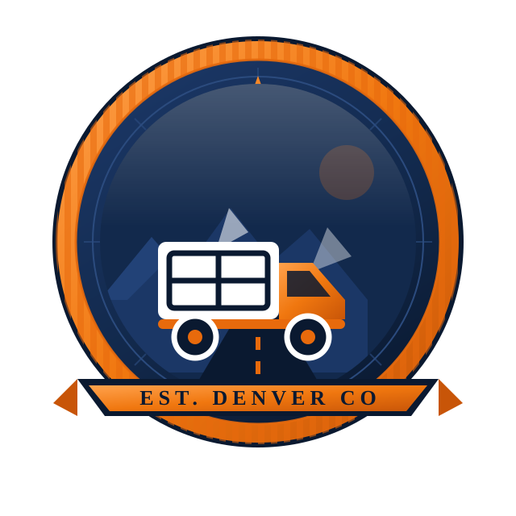
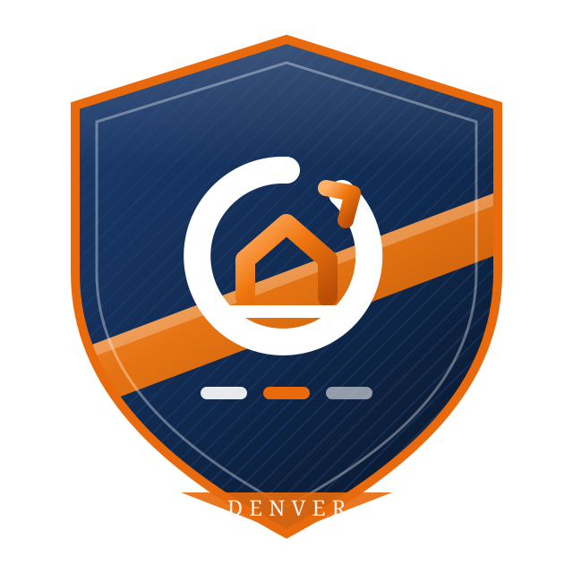
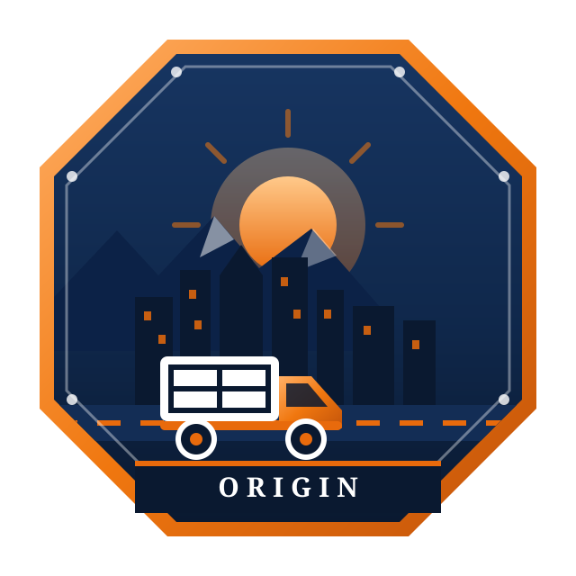

Первые три были слишком простыми. Эти — насыщенные, с проработанной геральдикой, фактурой и сюжетом внутри. Палитра прежняя: тёмно-синий #0C1E3C и оранжевый #E86A0C. Смотрите не только крупный знак, но и строку «мелкие размеры» — там видно, что остаётся от рисунка на визитке и во вкладке браузера.
Герб перевозчика старой школы. Зубчатое кольцо печати, гильошированные лучи, кольцевая надпись ORIGIN · MOVERS, компасная роза сверху — знак точки отправления. Внутри медальона: гряда Front Range со снежными шапками, уходящая вглубь дорога с разметкой и фургон в профиль. Снизу лента-картуш с засечным шрифтом EST. DENVER CO.

Геральдический щит с фаской и двойной обводкой, фон набран диагональной штриховкой, как на защищённых бланках. Через щит идёт оранжевая перевязь — маршрут. В центре монограмма: буква O разомкнута и заканчивается стрелкой (путь продолжается), внутри неё буква M собрана из двух скатов крыши — старый адрес и новый. Ниже три ступени: погрузка, перевозка, разгрузка.

Восьмиугольная транспортная табличка с заклёпками по углам. Внутри — панорама Денвера: небоскрёбы с горящими окнами, за ними Front Range со снегом, над городом восходящее солнце с лучами. По низу дорога с разметкой и фургон, под ним планка с названием. Самый «городской» и самый детальный из трёх.

Что важно знать перед выбором. Чем больше деталей в знаке, тем хуже он живёт в мелком размере: во вкладке браузера и на иконке приложения панорама города или гряда гор превращаются в кашу. Поэтому для выбранного варианта я сделаю вторую, упрощённую версию — только монограмма или силуэт фургона — и поставлю её туда, где логотип меньше 48 px. Так делают все крупные перевозчики: сложный герб на борту машины, простой знак в приложении. Скажите букву — соберу полный комплект: шапка, подвал, страница «Спасибо», иконки вкладки, одноцветная версия для печати и штампа.